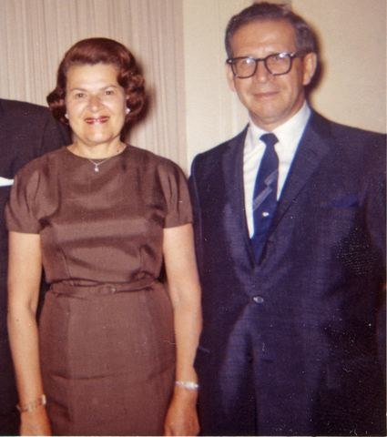

Jacob Hecht
1896–1988
Life Story
Jack remembered that as a child in Vienna, he saw the Emperor riding on horseback in a parade.
In Vienna, while riding on a trolley, the military was trying to recruit soldiers by asking men questions in Yiddish. Jack pretended not to know Yiddish, which might have saved him from being recruited/conscripted for Austro-Hungarian Empire’s Army in WWI (Jack left Europe April 1914).
Jack's son, Manny, said that his father was the most courageous man he ever met. Jack had 4 or 5 businesses in Cleveland. He was not afraid of anything and at work would always be there with his fists in case of an altercation.
In the 1950s, Jack paid to have a new tombstone erected for his mother Adele in the Vienna, Austria Central Cemetery; Gate 4. The original one had disintegrated.
Life events
| Born | |
|---|---|
| Bris/Naming Ceremony | 19 Sep 1896 · Zolochiv, L'viv, Ukraine Map · at home - house #182 in Zelechow Wielki |
| Lived | 21 Aug 1905 · 1020, Hanovergasse 8, Vienna, Austria Map · Per Maximillian's birth record. |
| Lived | 29 Jun 1908 · 1200 Romanogasse 12-14, Vienna, Austria Map · Per Rose's birth record |
| Lived | 16 Oct 1910 · 1200 Hirschvogelgasse 3, Vienna, Austria Map · Per Sigfried's, birth record. |
| Lived | 1913 · Vienna, Austria Map · Occupation: Window dresser |
| Departure | 23 Apr 1914 · Bremen, Germany Map |
| Arrival | 8 May 1914 · Baltimore, Maryland Map · Steamship: Neckar, 3rd class. Manifest #1 List# 9 Book 72. Going to Pittsburgh, PA to see brother Joseph Hecht 67 Marion St. Listed father as Jochil Hecht - Wien 20, Olennargasse 44. Occupation Jeweler, Single. Arrived with $20 in his pocket |
| Naturalized | 22 Oct 1914 · 1912 Kedzie Ave, Chicago, Illinois Map · He would have been in Chicago only as long as it took to apply for US citizenship. |
| Lived | 17 Sep 1916 · 5905 Outhwaite Ave, Cleveland, Ohio Map · Per marriage record. Occupation: Temperer (probably in a factory) |
| Married | 17 Sep 1916 · Anna Sabad · Cuyahoga County, Ohio Map |
| Lived | |
| Occupation | 1919 · Pittsburgh, Pennsylvania Map · Worked in a steel mill |
| Lived | 1920 · 5406 Butler St, Pittsburgh, Pennsylvania Map · Owned a grocery store. Lived behind store, upstairs.  |
| Married | 22 Oct 1922 · Sarah Miller · 3269 E. 118th St., Cleveland, Ohio Map |
| Lived | 1923 · 3337 East 135th St., Cleveland, Ohio Map |
| Naturalized | 26 Jun 1924 · Cleveland, Ohio Map · 1910233-Vol. 75, Pg. 82 Court of Common Pleas. Witnesses: David V. Green, 2471 E. 84 St. Louis A. Fisher, 876 Lakeview Rd |
| Departure | 20 Jun 1925 · Cherbourg, Manche, Basse-Normandie, France Map · Coming back from visiting his parents in Vienna. |
| Arrival | 25 Jun 1925 · Manhattan, New York Map  |
| Lived | 1930 · 3532 East 163rd St, Cleveland, Ohio Map · Marital Status: Married; Relation to Head: Head |
| Occupation | Jan 1934 - 1944 · 9706 Cedar Ave, Cleveland, Ohio Map · Owned the Cedar Gardens Night Club In 1934, Jacob (Jack) Hecht opened Cedar Gardens a popular restaurant and nightclub on 9706 Cedar Ave. Cleveland. It was previously a nightclub, Charm House and Butterfly Inn, a Chinese restaurant.
(In a personal family interview, Jack’s son, Manny said he was 16 years old when the club opened. He worked there on Saturday nights and carried a gun. Manny said Saturday nights 90% of the clients were white; Sunday nights 90% were black).
Cedar Gardens (affectionately regarded as Cleveland's Cotton Club) offered Chinese and American food at affordable prices. It was also equipped to host parties and families. It was the first and largest "Black and Tan" (interracial) night club between Chicago and New York. Whenever they showed TV of jazz nights it would be his club. The large basement room nightclub presented full floor shows with a house band led by Marion Sears into the 1940s. The club had a band and at least five acts. The musicians at times included Buster Harding, Andy Anderson, Francis Williams, Earle Warren, Freddie Webster, Tadd Dameron, Bull Moose Jackson and Pee Wee Jackson. Rose Murphy, the Jazz pianist, got her start at the club. The intermission piano player was Poison Gardner. Baby Heinz was a wonderful blues singer married to Earl father Heinz. From the 1940s until the late '60s, local groups played at Cedar Gardens.
In addition to being listed in the Green Book guides for African American travelers, Cedar Gardens was particularly important to Cleveland’s drag scene when drag performers were called “female impersonators.” Cedar Gardens hosted multiple drag performers, primarily throughout the 1940s. Cedar Gardens’ history with drag performers provides an early view of what would eventually evolve into modern drag culture as the location provided an early place of acceptance and even praise for drag artists.
In 1935, Cedar Gardens began hosting drag performers. One of the earliest, Sam Fouche, went by the stage name Mae West, came to Cedar Gardens from New York, was only supposed to perform for 1 week, but was so popular the manager convinced her to stay for longer. West was an incredibly beloved performer at Cedar. A Call and Post article stated “well I know a few fellows who tried to date her… or him. During the past week the Cedar Gardens Lounge turned away eager fun lovers every night.” Drag performances were accepted at these entertainment venues and treated as an art form by the local newspaper, this was especially unique considering that the Call and Post was a more conservative leaning Black newspaper.
Link
Cedar Gardens closed in 1969 after a fire destroyed the building. It is deeply tragic that a location important to Cleveland’s and Black and LGBTQ+ history was lost. Cedar Gardens provided a place for what we would now call drag artists to perform their acts for an appreciative audience. At Cedar Gardens drag was seen as a worthy form of entertainment and artistry, with its performers gaining high praise for their skills.
Resources:
- “Bobbing Along with Bob Williams.” Call & Post. May 20, 1944.
- “Cedar Gardens.” Call & Post. Jan 27, 1934.
- “Cedar Gardens’ Stock is Best of Pre-War Brands of Fine Wines, Liquors: Good Order for Funsters is Also Feature in Comfort, Convenience.” Call & Post. Aug 5, 1944.
- “Female Impersonator Held Over for Second Week at Cedar Gardens.” Call & Post. Aug 22, 1935.
- “Female Impersonator.” Call & Post. Aug 15, 1935.
- “Fire Loss 1-no Title.” Call & Post. Mar 29, 1969.
- Minor, Valena. “Patrons Laugh at “Night in Nut House” Given for Landscaping Crile Hospital.” Cleveland Call & Post, Aug 26, 1944.
- Mosbrook, Joe. “Cedar Gardens.” In Cleveland Jazz History. Cleveland: Northeast Ohio Jazz Society, 2013. Page 120-21.
- “On the Avenue with T.D.S.” Call & Post. Jan 2, 1936.
- Roman, Al. “Garden Reduces Price on Liquor: Stage Bigger Floor shows.” Call & Post. June 3, 1944.
- Roman, Al. “Mabel Hunter Star New Garden’s show.” Call & Post. April 29, 1944.
- Roman, Al. “Will Bring Better shows to Offset New 30%. Amusement Tax at Gardens.” Call & Post. Mar 25, 1944.
- Souther, Mark. “Cedar Gardens.” Green Book Cleveland.
- Taylor, Deveen “Four Ways Hollywood Legend Mae West Inspired Drag Queen Culture.” PBS. Jun 12, 2020.
- T.D.S. “On the Avenue.” Call and Post. Sep 17, 1936.
- Williams, Bob. “Cedar Gardens Evening Dates Open to All Clubs Wishing Treasury Funds.” Call & Post. Aug 12, 1944. |
| Occupation | 1939 - 1944 · 1476 Davenport Ave, Cleveland, Ohio Map · Owned the TipTop Brewing Co. (Took over from the Sunrise Brewing Co.)  |
| Lived | 1940 - 1942 · 3351 Glencarin Rd, Shaker Heights, Ohio Map · Marital Status: Married; Relation to Head: Head |
| Married | about 1957 · Esther Hecht · Cleveland, Ohio Map |
| Died | 16 Jul 1988 · Cleveland, Ohio Map · Cleveland Jewish News |
| Buried | 18 Jul 1988 · Mt. Olive Cemetery, Solon, Ohio Map · Plot 5-9-30 |
Family

Photos
Jacob Hecht
Jacob Hecht
Jacob Hecht
Anna Sabad
Jacob Hecht
Jacob Hecht

Jacob Hecht
Joseph Elliot Hecht
Charles Bodek
Sadie Hecht
Anna Sabad
Jacob Hecht
Jacob Hecht
Sarah Miller
Joseph Elliot Hecht
Clara Hecht
Charles Bodek
Sadie Hecht
Jacob Hecht
Jacob Hecht
Joseph Elliot Hecht
Anna Rubinoff
Jacob Hecht
Sarah Miller
Jacob Hecht
Joseph Elliot Hecht
Jacob Hecht

Jacob Hecht
Jacob Hecht
Jacob Hecht

Jacob Hecht

Jacob Hecht

Jacob Hecht
Sarah Miller
Jacob Hecht

Jacob Hecht

Jacob Hecht
Jacob Hecht

Jacob Hecht
Jacob Hecht

Joseph Elliot Hecht
Clara Hecht
Charles Bodek
Sadie Hecht
Anna Rubinoff
Aron Altchouler
+3 more